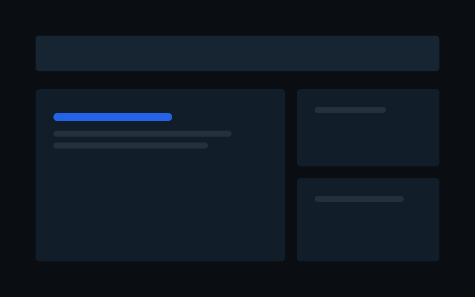

The Gula Corp.
- Problema
- Los leads no quedaban registrados en un solo sitio y era difícil hacerles seguimiento.
- Qué hicimos
- Web corporativa conectada a una base de datos, con un CRM interno para registrar cada lead y seguir su estado.
- Herramienta
- Web + base de datos + CRM interno.